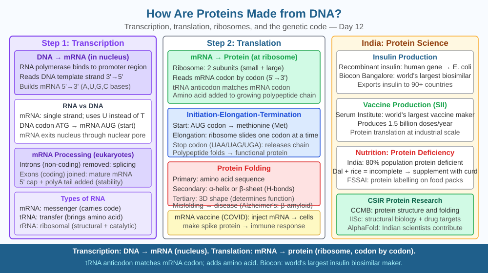

By the end of this lesson, you should be able to describe the two-stage process of transcription and translation, name the key molecules involved at each stage, and predict what happens to protein production when ribosomes are disabled.
Your DNA sits locked inside the nucleus of every cell, never leaving. Yet every second, thousands of different proteins are being assembled outside the nucleus — in the cytoplasm. Haemoglobin in red blood cells, insulin in pancreatic cells, collagen in skin cells. Each protein is different, each is made in the right cell at the right time. How does the static library of DNA instructions get turned into the dynamic, working machinery of life?
The journey from DNA to protein happens in two distinct stages: transcription (in the nucleus) and translation (at ribosomes in the cytoplasm). Together, this process is called gene expression and follows the central dogma of molecular biology: DNA → RNA → Protein.
Stage 1 — Transcription
When a gene needs to be expressed, an enzyme called RNA polymerase binds to a specific sequence on the DNA called the promoter region, just upstream of the gene. The double helix unwinds locally and RNA polymerase reads the template strand of DNA in the 3' to 5' direction, synthesising a complementary strand of messenger RNA (mRNA) in the 5' to 3' direction.
The base-pairing rules used in transcription are the same as in DNA replication, with one key difference: in mRNA, uracil (U) replaces thymine (T). So wherever adenine (A) appears on the DNA template, uracil appears in the new mRNA strand.
The mRNA strand is a mobile copy of the gene's information. In eukaryotic cells (including all human cells), the raw mRNA — called pre-mRNA — is processed before leaving the nucleus: non-coding sequences called introns are spliced out, and the coding sequences called exons are joined together. A protective cap is added at the 5' end and a poly-A tail at the 3' end. The mature mRNA then exits the nucleus through nuclear pore complexes and enters the cytoplasm.
Stage 2 — Translation
In the cytoplasm, the mRNA binds to a ribosome — a complex molecular machine made of two subunits (large and small), each built from ribosomal RNA (rRNA) and proteins. Ribosomes are the actual sites where amino acids are assembled into a protein chain.
Translation proceeds codon by codon. The ribosome reads the mRNA sequence from the start codon AUG (which codes for the amino acid methionine and signals "begin here") toward a stop codon (UAA, UAG, or UGA). For each codon, a specific transfer RNA (tRNA) molecule carries the matching amino acid to the ribosome. Each tRNA has a three-base sequence called an anticodon at one end that is complementary to the mRNA codon, and carries its specific amino acid at the other end.
The ribosome has three binding sites: the A site (where an incoming aminoacyl-tRNA binds), the P site (where the growing polypeptide chain is held), and the E site (where the empty tRNA exits). A peptide bond forms between the amino acid in the A site and the growing chain in the P site. The ribosome moves one codon along the mRNA, the process repeats, and the chain grows. When a stop codon is reached, no tRNA binds — instead, a release factor protein signals the chain to detach. The newly formed polypeptide then folds into its functional three-dimensional shape.
The entire process from one mRNA molecule can involve multiple ribosomes reading simultaneously (a structure called a polysome), producing many copies of the same protein quickly.
Think of the process as a factory with two departments:
Key roles: - DNA = master blueprint (stays in the nucleus) - mRNA = working photocopy (carries instructions to ribosomes) - tRNA = delivery vehicle (brings correct amino acid for each codon) - Ribosome = assembly machine (forms peptide bonds between amino acids) - Protein = finished product (performs the actual biological function)
The included SVG shows a two-panel diagram:

Understanding transcription and translation has enabled several practical applications relevant to Indian students:
Q3 established that destroying ribosomes halts protein synthesis completely. Now extend the prediction: some cells in the human body — such as mature red blood cells — have no nucleus and no DNA. Yet they carry haemoglobin, which is a protein.
Predict: If a red blood cell's haemoglobin molecules are damaged or destroyed, can the cell produce new haemoglobin to replace them? Use your knowledge of where transcription occurs and what ribosomes need in order to function. What does this imply for the lifespan of a red blood cell?
What is the correct sequence for protein production from DNA?
Correct answer: b
Why is understanding transcription and translation more useful than just knowing proteins come from DNA?
Correct answer: b
What would happen to protein production if ribosomes in a cell were destroyed?
Correct answer: a
Explain today's concept to a younger student in 60 seconds without technical jargon. Then explain it again using the correct scientific vocabulary.
If both explanations describe the same mechanism, you have understood the concept rather than memorised it.
A single gene can produce multiple different proteins from the same DNA sequence through a process called alternative splicing. After transcription, the cell's splicing machinery can include or exclude different exons from the same pre-mRNA, producing different mature mRNAs — and therefore different proteins — from one gene. The human body contains roughly 20,000–25,000 genes, yet can produce over 100,000 different protein variants. One gene, many products — all from the same DNA but processed differently.
Proteins are produced in two stages: transcription copies a gene from DNA into mRNA inside the nucleus, and translation reads that mRNA codon by codon at ribosomes in the cytoplasm, assembling the correct amino acid chain — so destroying ribosomes halts all protein production immediately.